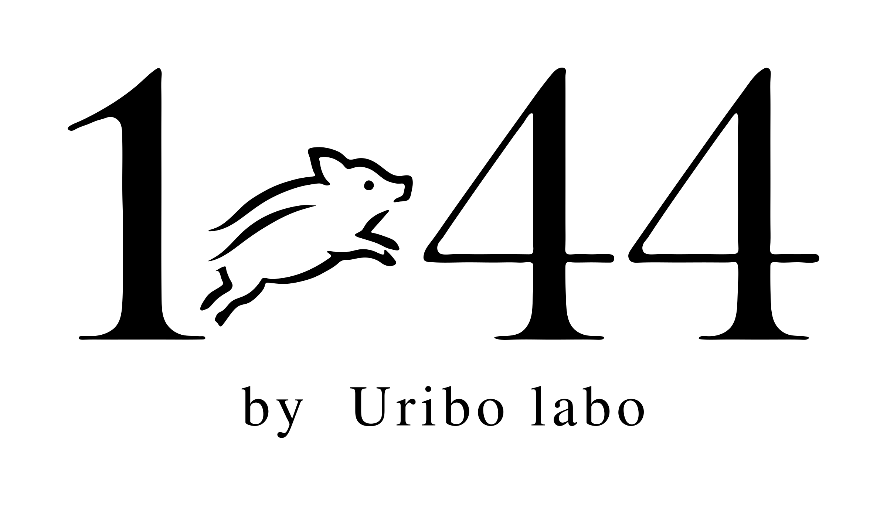

いまは 「やさしい日本語」で 見ています。
発売のお知らせ・法人のお取引・取材のご相談を受け付けています。
GET IN TOUCH
合同会社Uribo（担当：藤原）
TEL 070-8482-5454
〒892-0802 鹿児島市清水町12-15ロイヤルハイツ清水102号室
ご入力内容をメールアプリに引き継ぎます。メールアプリから送信を完了してください。
個人情報は、お問い合わせへの対応とご案内の目的にのみ使用します。